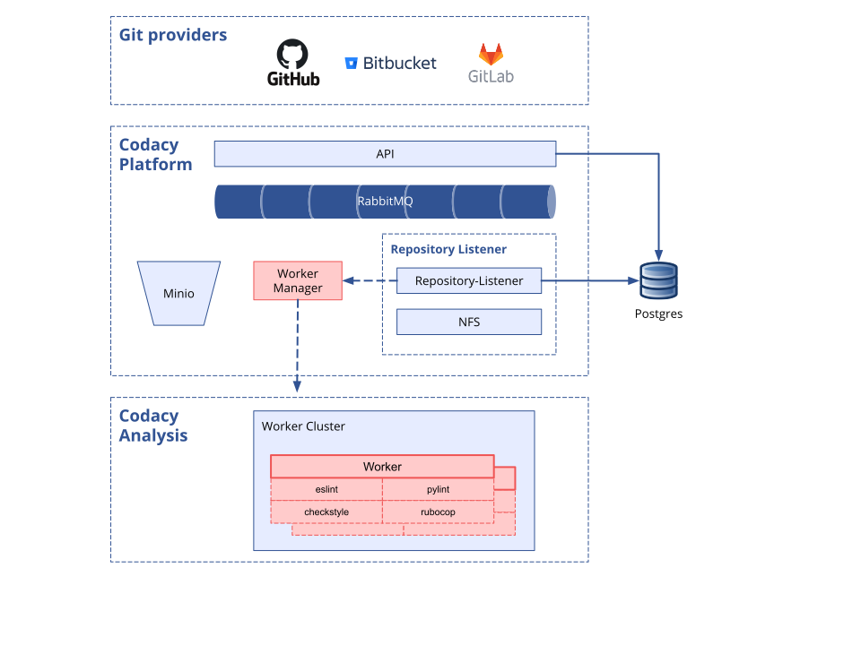

System requirements¶
Before installing Codacy you must ensure that you have the following infrastructure correctly provisioned and configured:
The next sections describe in detail how to set up these prerequisites.
Kubernetes or MicroK8s cluster setup¶
The cluster running Codacy must satisfy the following requirements:
- The infrastructure hosting the cluster must be provisioned with the hardware and networking requirements described below
- The orchestration platform managing the cluster must be one of:
- Kubernetes version 1.14.* or 1.15.*
- MicroK8s version 1.15
- The NGINX Ingress controller must be installed and correctly set up in the cluster
Cluster networking requirements¶
The cluster must be configured to accept and establish connections on the following ports:
| Service | Protocol/Port | Notes | |
|---|---|---|---|
| Inbound | SSH | TCP/22 | MicroK8s only, to access the infrastructure remotely. |
| Inbound | HTTP | TCP/80 | Allow access to the Codacy website and API endpoints |
| Inbound | HTTPS | TCP/443 | Allow access to the Codacy website and API endpoints |
| Outbound | PostgreSQL | TCP/5432 | Connection to the PostgreSQL DBMS |
| Outbound | SMTP | TCP/25 | Connection to your SMTP server |
| Outbound | SMTPS | TCP/465 | Connection to your SMTP server over TLS/SSL |
| Outbound | Docker Hub | * | Connection to Docker Hub to download the required container images |
| Outbound | Git provider | * | Connection to the ports required by your remote Git provider |
Cluster hardware requirements¶
The high-level architecture described in the next section is important in understanding how Codacy uses and allocates hardware resources. Below we also provide guidance on resource provisioning for typical scenarios.
For a custom hardware resource recommendation, please contact us at support@codacy.com.
Codacy architecture¶
You can look at Codacy separately as two parts:
- The "Platform" contains the UI and other components important to treat and show results
- The "Analysis" is the swarm of workers that run between one and four linters simultaneously, depending on factors such as the number of files or the programming languages used in your projects

Since all components are running on a cluster, you can increase the number of replicas in every deployment to give you more resilience and throughput, at a cost of increased resource usage.
The following is a simplified overview of how to calculate resource allocation for the "Platform" and the "Analysis":
| Component | vCPU | Memory |
|---|---|---|
| Platform (1 replica per component) |
4 | 8 GB |
| Analysis (1 Analysis Worker + up to 4 linters) |
5 (per Analysis Worker) |
10 GB (per Analysis Worker) |
Standard cluster provisioning¶
The resources recommended on the following table are based on our experience and are also the defaults in the values-production.yaml file, which you might need to adapt taking into account your use case. As described in the section above, Codacy's architecture allows scaling the "Analysis" part of the platform, meaning that the resources needed for Codacy depend mainly on the rate of commits done by your team that Codacy will be analyzing.
Important
For MicroK8s clusters we added an extra 1.5 vCPU and 1.5 GB memory to the "Platform" to account for the MicroK8s platform itself running on the same machine.
| Installation type | Replicas per component | Max. concurrent analysis | Platform resources | Analysis resources | ~ Total resources |
|---|---|---|---|---|---|
| Kubernetes Small Installation |
1 | 2 | 4 vCPUs 8 GB RAM |
10 vCPUs 20 GB RAM |
16 vCPUs 32 GB RAM |
| Kubernetes Medium Installation (default) |
2 | 4 | 8 vCPUs 16 GB RAM |
20 vCPUs 40 GB RAM |
32 vCPUs 64 GB RAM |
| Kubernetes Big Installation |
2+ | 10+ | 8+ vCPUs 16+ GB RAM |
50+ vCPUs 100+ GB RAM |
60+ vCPUs 110+ GB RAM |
| MicroK8s Minimum |
1 | 2 | 5.5 vCPUs 9.5 GB RAM |
10 vCPUs 20 GB RAM |
16 vCPUs 32 GB RAM |
| MicroK8s Recommended (default) |
1+ | 2 | 9.5+ vCPUs 17.5+ GB RAM |
10 vCPUs 20 GB RAM |
21+ vCPUs 40+ GB RAM |
The storage requirements recommended on the following table depend mainly on the number of repositories that Codacy will be analyzing and should be used as a guideline to determine your installation requirements.
| Component | Bundled in the chart? | Minimum recommended |
|---|---|---|
| NFS | Yes | 200 GB |
| RabbitMQ | Yes | 8 GB |
| Minio | Yes | 20 GB |
| PostgreSQL | No (external DB recommended) | 500 GB+ |
PostgreSQL server setup¶
Codacy requires a database server to persist data that must satisfy the following requirements:
- The infrastructure hosting the database server must be provisioned with the hardware requirements described below
- The DBMS server must be PostgreSQL version 9.6
- The PostgreSQL server must be configured to accept connections from the cluster
- The Codacy databases and a dedicated user must be created using the instructions below
Important
Google, the developer of Kubernetes, doesn't recommend running database servers on your cluster. As such, consider using a managed solution like Amazon RDS or Google Cloud SQL, or running the PostgreSQL server on a dedicated virtual machine.
We recommend that you use a managed solution to reduce maintenance and configuration costs of the PostgreSQL server. The main cloud providers all have this service that you can use, for example:
PostgreSQL hardware requirements¶
The following are the minimum specifications recommended for provisioning the PostgreSQL server:
| vCPUs | Memory | Storage | Max. concurrent connections |
|---|---|---|---|
| 4 | 8 GB | 500 GB+ | 300 |
Preparing PostgreSQL for Codacy¶
Before installing Codacy you must create a set of databases that will be used by Codacy to persist data. We also recommend that you create a dedicated user for Codacy, with access permissions only to the databases that are specific to Codacy:
-
Connect to the PostgreSQL server as a database admin user. For example, using the
psqlcommand line client:psql -U postgres -h <PostgreSQL server hostname> -
Create the dedicated user that Codacy will use to connect to PostgreSQL. Make sure that you change the username and password to suit your security needs:
CREATE USER codacy WITH PASSWORD 'codacy'; ALTER ROLE codacy WITH CREATEDB;Take note of the username and password you define, as you will require them later to configure the connection from Codacy to the PostgreSQL server.
-
Make sure that you can connect to the PostgreSQL database using the newly created user. For example, using the
psqlcommand line client:psql -U codacy -d postgres -h <PostgreSQL server hostname> -
Create the databases required by Codacy:
CREATE DATABASE accounts WITH OWNER=codacy; CREATE DATABASE analysis WITH OWNER=codacy; CREATE DATABASE results WITH OWNER=codacy; CREATE DATABASE metrics WITH OWNER=codacy; CREATE DATABASE filestore WITH OWNER=codacy; CREATE DATABASE jobs WITH OWNER=codacy; CREATE DATABASE activities WITH OWNER=codacy; CREATE DATABASE hotspots WITH OWNER=codacy; CREATE DATABASE listener WITH OWNER=codacy; CREATE DATABASE crow WITH OWNER=codacy;